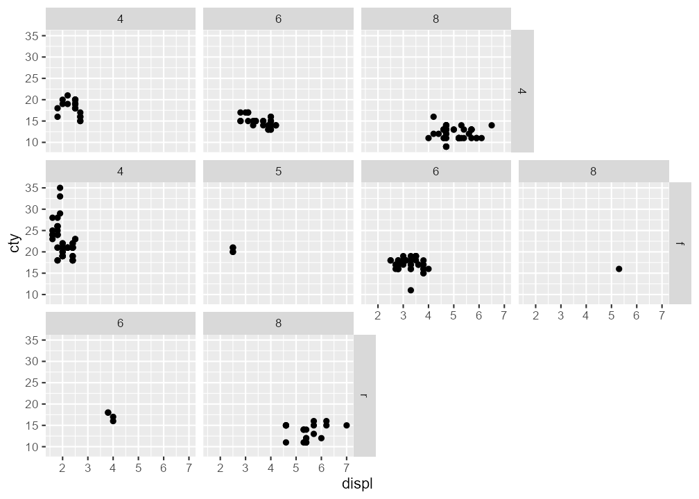

ggragged extends the faceting system in ggplot2 to ragged grids—a hybrid layout between facet_wrap() and facet_grid().
-
facet_ragged_rows()groups panels into rows that can vary in length. -
facet_ragged_cols()groups panels into columns that can vary in length.
Installation
Install the current release from CRAN:
install.packages("ggragged")Or the development version from GitHub:
remotes::install_github("mikmart/ggragged")Example
Ragged grids can be used to clearly separate nested hierarchies in the panel layout:
library(ggplot2)
library(ggragged)
p <- ggplot(mpg, aes(displ, cty)) + geom_point()
p + facet_ragged_rows(vars(drv), vars(cyl))
p + facet_ragged_cols(vars(cyl), vars(drv))